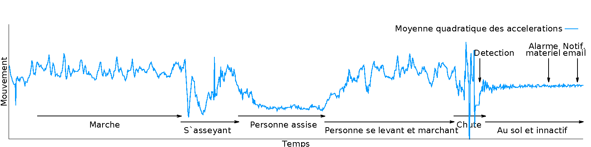

Projet Blue print
Prenez votre santé en main
Une approche fondamentalement scientifique
Le projet Blue print repose sur des travaux scientifiques récents pour garantir une qualité de service optimale. De la même manière, nous participons activement à la communauté scientifique en publiant nos propres travaux et technologies innovantes.
Détection de chutes
Détecter la chute d'une personne est une tâche complexe. En effet, une erreur de détection peut être lourde de conséquences, qu'elle soit due à la non-détection d'une chute (faux-négatif, laissant la personne à elle-même) ou à la confusion d'un comportement normal (e.g. personne s'asseyant, s'étirant) pour une chute (faux-positif, menant à une intervention inutile). Dans le cadre du projet Blue print, nous avons mis en place un système complet permettant de détecter efficacement les chutes réelles et critiques. Notre protocole fonctionne de la manière suivante:
- # Discrimination du mouvement: Blue print se base principalement sur les données fournies par des accéléromètres pour identifier les chutes (et de manière optionnelle sur le rythme cardiaque, celui-ci variant rapidement lors d'une chute). Dans un premier temps, les données tri-axiales de l'accéléromètre sont combinées par le biais de leur moyenne quadratique, et deux mesures successives sont comparées entre elles de manière à obtenir l'amplitude du mouvement. Ensuite, ces mesures d'amplitude sont analysées statistiquement (par le biais de leur écart-type) et divisées en trois catégories distinctes : niveau d'activité normal (e.g. marche, activités quotidiennes), activité anormalement basse (e.g. pesonne au sol inactive) et chute. Dans ce but, l'écart-type est mis-à-jour itérativement pour chaque nouvelle mesure (cela n'étant pas possible avec la formule générale de l'écart-type, nous avons développé un algorithme spécifique répondant à ce besoin). Chaque mesure de l'amplitude du mouvement est alors comparée à l'écart-type, une chute étant détectée lorsque celle-ci est supérieure à 3 fois l'écart-type, une activité anormalement basse l'étant lorsque l'amplitude est inférieure à la moitié de l'écart type, et toute autre amplitude étant considérée comme la résultante d'un comportement normal. Ces valeurs par défaut sont issues de campagnes d'expérimentation, mais peuvent être ajustées à loisir dans le système. De cette manière, notre système est capable de détecter avec certitude tout types de chutes, en évitant les faux-négatifs.
- # Confirmation de la criticité de la chute: À ce niveau, certaines situation peuvent être interprétées par le système comme la résultante d'une chute (e.g. se lever, s'asseoir), menant à un faux-positif. Une approche complémentaire a donc été développée pour exclure également ce type d'erreurs. Partant du principe qu'après une chute critique, une personne est le plus souvent incapable de bouger pendant au moins quelques secondes (e.g. sous le choc ou inconscient), nous avons implémenté un algorithme en deux temps pour ce rapprocher de notre objectif. Dans un premier temps, le système vérifie si la chute est suivie d'une longue période d'inactivité, correspondant à la personne au sol sous le choc. Juste après que la chute soit détectée, le système conserve les mesures de l'amplitude du mouvement pendant une minute (valeur par défaut, modifiable), et si les deux-tiers de ces mesures correspondent à un "niveau d'inactivité inhabituel" (valeur par défaut, modifiable), le système suppose que la chute est réelle. Alors, le matériel (montre ou téléphone) émet un son d'alarme, indiquant à la personne d'appuyer sur un bouton pour l'éteindre. Si la personne ne le fait pas, la chute est de nouveau considérée comme réelle, et la personne en charge (famille ou services de soins) est directement notifiée.
- 